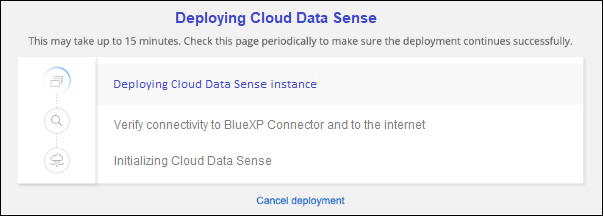

リリースノート
リリースノート
BlueXPを使用してBlueXP分類をクラウドに導入します
 変更を提案
変更を提案
BlueXP分類をクラウドに導入するには、いくつかの手順を実行します。BlueXPでは、BlueXPコネクタと同じクラウドプロバイダネットワークにBlueXP分類インスタンスが導入されます。
また、次のことも可能です "インターネットにアクセスできるLinuxホストにBlueXP分類をインストールします"。このタイプのインストールは、同じくオンプレミスにあるBlueXP分類インスタンスを使用してオンプレミスのONTAP システムをスキャンする場合に適したオプションですが、これは必須ではありません。どのインストール方法を選択しても、ソフトウェアはまったく同じように機能します。
クイックスタート
これらの手順を実行すると、すぐに作業を開始できます。また、残りのセクションまでスクロールして詳細を確認することもできます。
 コネクタを作成します
コネクタを作成しますコネクタがない場合は、ここでコネクタを作成します。を参照してください "AWS でコネクタを作成する"、 "Azure でコネクタを作成する"または "GCP でコネクタを作成する"。
また可能です "コネクタをオンプレミスにインストールします" ネットワーク内のLinuxホストまたはクラウド内のLinuxホスト。
 前提条件を確認する
前提条件を確認する環境が前提条件を満たしていることを確認します。これには、インスタンスのアウトバウンドインターネットアクセス、コネクタとBlueXPのポート443経由の分類間の接続などが含まれます。 すべてのリストを参照してください。
 BlueXP分類を導入します
BlueXP分類を導入しますインストールウィザードを起動して、BlueXP分類インスタンスをクラウドに導入します。
 BlueXP分類サービスにサブスクライブします
BlueXP分類サービスにサブスクライブしますBlueXPで分類されてスキャンされる最初の1TBのデータは、30日間無料です。その時点以降もデータのスキャンを続行するには、クラウドプロバイダMarketplaceまたはネットアップのBYOLライセンスを通じてBlueXPサブスクリプションが必要です。
コネクタを作成します
コネクタがない場合は、クラウドプロバイダでコネクタを作成します。を参照してください "AWS でコネクタを作成する" または "Azure でコネクタを作成する"または "GCP でコネクタを作成する"。ほとんどの場合、BlueXPの分類をアクティブ化する前にコネクタがセットアップされていることがほとんどです "BlueXPの機能にはコネクタが必要です"ただし、ここで設定する必要がある場合もあります。
特定のクラウドプロバイダに導入されているコネクタを使用する必要がある場合は、次のような状況があります。
-
AWSのCloud Volumes ONTAP 、Amazon FSx for ONTAP 、またはAWS S3バケット内のデータをスキャンする場合は、AWSのコネクタを使用します。
-
AzureのCloud Volumes ONTAP またはAzure NetApp Files でデータをスキャンする場合は、Azureのコネクタを使用します。
-
Azure NetApp Files の場合は、スキャンするボリュームと同じ領域に配置する必要があります。
-
-
GCP の Cloud Volumes ONTAP でデータをスキャンする場合は、 GCP のコネクタを使用します。
オンプレミスのONTAP システム、ネットアップ以外のファイル共有、汎用のS3オブジェクトストレージ、データベース、OneDriveフォルダ、SharePointアカウント、Googleドライブアカウントは、これらのクラウドコネクタのいずれかを使用している場合にスキャンできます。
また、次のことも可能です "コネクタをオンプレミスにインストールします" 自社ネットワーク内またはクラウド内の Linux ホストBlueXP分類をオンプレミスにインストールすることを計画している一部のユーザは、コネクタをオンプレミスにインストールすることもできます。
ご覧のように、を使用する必要がある状況もあります "複数のコネクタ"。
政府機関によるサポート
BlueXPの分類は、コネクタが政府機関のリージョン（AWS GovCloud、Azure Gov、Azure DoD）に導入されている場合にサポートされます。この方法で導入した場合、BlueXPには次の制限があります。
-
OneDriveアカウント、SharePointアカウント、Googleドライブアカウントはスキャンできません。
-
Microsoft Azure Information Protection（AIP）ラベル機能を統合できません。
前提条件を確認する
BlueXPの分類をクラウドに導入する前に、次の前提条件を確認して、サポートされる構成があることを確認してください。BlueXP分類をクラウドに導入する場合、コネクタと同じサブネットに配置されます。
- BlueXPの分類からアウトバウンドのインターネットアクセスを有効にします
-
BlueXPの分類にはアウトバウンドのインターネットアクセスが必要です。仮想ネットワークまたは物理ネットワークでインターネットアクセスにプロキシサーバを使用している場合は、次のエンドポイントに接続するためのアウトバウンドのインターネットアクセスがBlueXP分類インスタンスにあることを確認してください。プロキシは非透過である必要があります。現在、透過プロキシはサポートされていません。
AWS、Azure、GCPのいずれにBlueXP分類を導入するかに応じて、次の表を参照してください。
| エンドポイント | 目的 |
|---|---|
ネットアップアカウントを含むBlueXPサービスとの通信 |
|
¥ https://netapp-cloud-account.auth0.com ¥ https://auth0.com |
BlueXP Webサイトとの通信により、ユーザ認証を一元化。 |
https://cloud-compliance-support-netapp.s3.us-west-2.amazonaws.com \ https://hub.docker.com \ https://auth.docker.io \ https://registry-1.docker.io \ https://index.docker.io/ \ https://dseasb33srnrn.cloudfront.net/ \ https://production.cloudflare.docker.com/ |
ソフトウェアイメージ、マニフェスト、およびテンプレートにアクセスできます。 |
ネットアップが監査レコードからデータをストリーミングできるようにします。 |
|
¥ https://cognito-idp.us-east-1.amazonaws.com ¥ https://cognito-identity.us-east-1.amazonaws.com ¥ https://user-feedback-store-prod.s3.us-west-2.amazonaws.com ¥ https://customer-data-production.s3.us-west-2.amazonaws.com |
BlueXPでは、マニフェストやテンプレートへのアクセスとダウンロード、ログや指標の送信が可能です。 |
| エンドポイント | 目的 |
|---|---|
ネットアップアカウントを含むBlueXPサービスとの通信 |
|
¥ https://netapp-cloud-account.auth0.com ¥ https://auth0.com |
BlueXP Webサイトとの通信により、ユーザ認証を一元化。 |
https://support.compliance.api.bluexp.netapp.com/\ https://hub.docker.com \ https://auth.docker.io \ https://registry-1.docker.io \ https://index.docker.io/\ https://dseasb33srnrn.cloudfront.net/\ https://production.cloudflare.docker.com/ |
ソフトウェアイメージ、マニフェスト、テンプレートへのアクセス、およびログとメトリックの送信を提供します。 |
ネットアップが監査レコードからデータをストリーミングできるようにします。 |
| エンドポイント | 目的 |
|---|---|
ネットアップアカウントを含むBlueXPサービスとの通信 |
|
¥ https://netapp-cloud-account.auth0.com ¥ https://auth0.com |
BlueXP Webサイトとの通信により、ユーザ認証を一元化。 |
https://support.compliance.api.bluexp.netapp.com/\ https://hub.docker.com \ https://auth.docker.io \ https://registry-1.docker.io \ https://index.docker.io/\ https://dseasb33srnrn.cloudfront.net/\ https://production.cloudflare.docker.com/ |
ソフトウェアイメージ、マニフェスト、テンプレートへのアクセス、およびログとメトリックの送信を提供します。 |
ネットアップが監査レコードからデータをストリーミングできるようにします。 |
- BlueXPに必要な権限があることを確認します
-
BlueXPにリソースを導入し、BlueXP分類インスタンスのセキュリティグループを作成する権限があることを確認します。BlueXPの最新の権限は、で確認できます "ネットアップが提供するポリシー"。
- BlueXPコネクタからBlueXP分類にアクセスできることを確認します
-
コネクタとBlueXP分類インスタンスが接続されていることを確認します。コネクタのセキュリティグループで、ポート443を介したBlueXP分類インスタンスとの間のインバウンドおよびアウトバウンドトラフィックを許可する必要があります。この接続により、BlueXP分類インスタンスを導入し、[Compliance]タブと[Governance]タブに情報を表示できます。BlueXPの分類は、AWSとAzureの政府機関のリージョンでサポートされます。
AWSおよびAWS GovCloud環境では、追加のインバウンドおよびアウトバウンドのセキュリティグループルールが必要です。を参照してください "AWS のコネクタのルール" を参照してください。
AzureおよびAzure Government環境には、追加のインバウンドおよびアウトバウンドのセキュリティグループルールが必要です。を参照してください "Azure のコネクタのルール" を参照してください。
- BlueXPの分類を継続して実行できることを確認します
-
データを継続的にスキャンするには、BlueXP分類インスタンスを引き続き使用する必要があります。
- WebブラウザからBlueXPに接続できることを確認します
-
BlueXPの分類を有効にしたら、ユーザがBlueXPの分類インスタンスに接続されているホストからBlueXPインターフェイスにアクセスできるようにします。
BlueXP分類インスタンスでは、プライベートIPアドレスを使用して、インデックス化されたデータにインターネットからアクセスできないようにします。そのため、BlueXPへのアクセスに使用するWebブラウザには、そのプライベートIPアドレスへの接続が必要です。この接続は、クラウドプロバイダへの直接接続（VPNなど）から行うことも、BlueXP分類インスタンスと同じネットワーク内のホストから行うこともできます。
- vCPU の制限を確認してください
-
クラウドプロバイダのvCPU制限で、必要な数のコアを含むインスタンスの導入が許可されていることを確認してください。BlueXPを実行している地域の関連するインスタンスファミリのvCPU制限を確認する必要があります。 "必要なインスタンスタイプを参照してください"。
vCPU の制限の詳細については、次のリンクを参照してください。
CPUとRAMの数が少ないAWSクラウド環境のインスタンスにBlueXP分類を導入できますが、これらのシステムの使用には制限があります。を参照してください "小さいインスタンスタイプを使用しています" を参照してください。
BlueXPの分類機能をクラウドに導入します
BlueXP分類のインスタンスをクラウドに導入するには、次の手順を実行します。コネクタはインスタンスをクラウドに導入し、そのインスタンスにBlueXP分類ソフトウェアをインストールします。
AWS環境でBlueXPコネクタからBlueXPの分類を導入する場合は、デフォルトのインスタンスサイズを選択するか、2つの小さいインスタンスタイプから選択できます。 "使用可能なインスタンスタイプと制限事項を参照してください"。デフォルトのインスタンスタイプを使用できない地域では、BlueXPの分類はで実行されます "代替インスタンスタイプ"。
-
BlueXPの左ナビゲーションメニューで、* Governance > Classification *をクリックします。

-
[ データセンスを活動化（ Activate Data sense ） ] をクリックし
-
[Installation]ページで、*[Deploy]>[Deploy]*をクリックして「Large」インスタンスサイズを使用し、クラウド導入ウィザードを開始します。
-
導入手順が完了すると、ウィザードに進捗状況が表示されます。問題が発生した場合は、停止して入力を求められます。

-
インスタンスが導入され、BlueXP分類がインストールされたら、*[構成に進む]*をクリックして_Configuration_pageに移動します。
-
BlueXPの左ナビゲーションメニューで、* Governance > Classification *をクリックします。
-
[ データセンスを活動化（ Activate Data sense ） ] をクリックし
-
[* Deploy*]をクリックして、クラウド導入ウィザードを開始します。

-
導入手順が完了すると、ウィザードに進捗状況が表示されます。問題が発生した場合は、停止して入力を求められます。
-
インスタンスが導入され、BlueXP分類がインストールされたら、*[構成に進む]*をクリックして_Configuration_pageに移動します。
-
BlueXPの左ナビゲーションメニューで、* Governance > Classification *をクリックします。
-
[ データセンスを活動化（ Activate Data sense ） ] をクリックし
-
[* Deploy*]をクリックして、クラウド導入ウィザードを開始します。
-
導入手順が完了すると、ウィザードに進捗状況が表示されます。問題が発生した場合は、停止して入力を求められます。
-
インスタンスが導入され、BlueXP分類がインストールされたら、*[構成に進む]*をクリックして_Configuration_pageに移動します。
BlueXPは、BlueXP分類インスタンスをクラウドプロバイダに導入します。
インスタンスがインターネットに接続されていれば、BlueXP ConnectorとBlueXP分類ソフトウェアのアップグレードは自動で実行されます。
設定ページで、スキャンするデータソースを選択できます。
また可能です "BlueXP分類用のライセンスをセットアップ" 現時点では、30日間の無料トライアルが終了するまで、料金はかかりません。